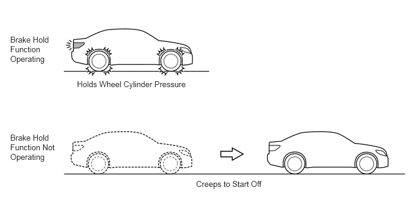

- The engine control system, electric parking brake system and electronically controlled brake system are all operating normally.
- The driver door is closed.
- The driver seat belt is buckled.
- The transfer drive mode is 2H or 4H.*1
- Downhill assist control is not operating (downhill assist control indicator is off).*2
| Last Modified: 10-07-2025 | 6.11:8.1.0 | Doc ID: NM100000002GOKJ |
| Model Year Start: 2024 | Model: Tacoma | Prod Date Range: [12/2023 - ] |
| Title: BRAKE CONTROL / DYNAMIC CONTROL SYSTEMS: BRAKE CONTROL SYSTEM (for Gasoline Model): BRAKE HOLD; 2024 - 2026 MY Tacoma [12/2023 - ] | ||
BRAKE HOLD
SYSTEM CONTROL
(a) When the driver depresses the brake pedal and brings the vehicle to a stop on a level road surface or gentle slope, the brake hold function maintains the wheel cylinder pressure of the 4 wheels, in order to keep the vehicle stationary. As a result, the vehicle will remain stationary even if the driver reduces the pressure on the brake pedal.
(b) While the brake hold function is operating, the skid control ECU illuminates the stop lights.
(c) When the driver starts the vehicle off, the system automatically releases the wheel cylinder pressure as the driver depresses the accelerator pedal.
(1) Brake Hold Standby Condition
- To operate the brake hold, it is first necessary
to establish the brake hold standby condition. The
brake hold standby condition is established when the
driver presses the brake hold switch after all the
conditions listed below have been met. As a result,
the brake hold standby indicator light illuminates in
the combination meter assembly.
Brake Hold Standby Conditions
*1: 4WD models *2: Models with DAC/CRAWL and MTS switch
(2) Brake Hold Operation Condition
- When all of the conditions listed below are met
while the brake hold standby condition is
established, the brake hold will operate. When the
brake hold operates, the brake hold operated
indicator light will illuminate in the combination
meter assembly.
Brake Hold Operation Conditions
*1: Models with Automatic Transmision *2: Models with Mannual Transmision
- The shift position is in any position other than P or R.*1
- The shift position is in any position other than R.*2
- The brake pedal is depressed and the vehicle is stopped.
- The accelerator pedal is not depressed.
- The vehicle is not on a steep gradient.
HINT:
If the brake hold is inoperative because the vehicle is on a steep gradient, the system informs the driver by turning off the brake hold operated indicator light and outputting a warning message on the multi-information display. To support the start off of the vehicle on a steep uphill gradient, hill-start assist control will operate.
(3) Brake Hold Operation Ending Condition
- When one of the conditions listed below has been
established, the skid control ECU ends the brake hold
function. In addition, the skid control ECU informs
the driver that the brake hold function has ended by
turning off the brake hold operated indicator light.
Brake Hold Operation Ending Conditions
*1: 4WD models *2: Models with DAC/CRAWL and MTS switch
- The accelerator pedal is depressed.
- The shift position is shifted to R while depressing the brake pedal.
- The transfer drive mode is set to 4L.*1
- Downhill assist control is operated (downhill assist control indicator is on).*2
(4) Electric Parking Brake Operation Condition
- If any one of the conditions listed below is
established while the brake hold function is
operating and the driver is not depressing the brake
pedal, the electric parking brake will lock
automatically.
Electric Parking Brake Operation Conditions
- The driver door is open.
- The driver seat belt is unbuckled.
- 3 minutes have elapsed since the brake hold function operated.
HINT:
After the electric parking brake is locked, make sure to operate the manual function or automatic parking brake release function to release the parking brake before starting off. For details, see the Electric Parking Brake System section.
(5) Brake Hold Standby Condition Canceling Condition
- If any one of the conditions listed below occurs
while the brake hold standby condition is
established, the skid control ECU cancels the brake
hold standby condition.
Brake Hold Standby Condition Canceling Conditions
*1: 4WD models *2: Models with DAC/CRAWL and MTS switch
- The electric parking brake has locked automatically as a result of the driver seat belt being unbuckled or the driver door being opened.
- Any one of the following takes place while the vehicle is being driven: the driver seat belt is unbuckled or the driver door is opened.
- The brake hold switch is pressed while the brake hold function is inoperative.
- The brake hold switch is pressed while the brake pedal is depressed and the brake hold function is operating.
- The transfer drive mode is set to 4L.*1
- Downhill assist control is operated (downhill assist control indicator is on).*2
(6) Brake Hold Operation Prohibition Condition
- If any system malfunction listed below occurs,
the skid control ECU prohibits the operation of the
brake hold function. At this time, the skid control
ECU alerts the driver by blinking the brake hold
operated indicator light.
Brake Hold Operation Prohibition Conditions
- An engine control system malfunction occurs.
- An electric parking brake system malfunction occurs.
- An brake control system malfunction occurs.*
HINT:
*: When the wheel cylinder pressure cannot be maintained while the brake hold function is operating, the parking brake automatically locks. After the electric parking brake is locked, make sure to operate the manual function or automatic parking brake release function to release the parking brake before starting off. For details, see the Electric Parking Brake System section.